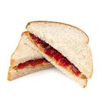

Peanut Butter and Jelly

A peanut butter and jelly sandwich is a simple, classic
American snack or meal made by spreading creamy or crunchy
peanut butter and sweet fruit jelly (or jam) between two
slices of bread. The peanut butter adds a rich, nutty
flavor and smooth or crunchy texture, while the jelly
brings a burst of sweetness and fruity contrast. Typically
made with white or whole wheat bread, it's easy to
prepare, kid-friendly, and beloved for its perfect balance
of salty and sweet. It can be enjoyed cold or toasted, and
is often paired with a glass of milk for a nostalgic,
satisfying treat.
Ingredients
- 2 slices of bread (white, whole wheat, or your
preferred type)
- 2–3 tablespoons peanut butter (creamy or
chunky)
- 2–3 tablespoons fruit jelly or jam (grape,
strawberry, or your favorite flavor)
Steps
- Place two slices of bread flat on a clean surface
(cutting board or plate).
- Use a knife to scoop some peanut butter.
- Spread it evenly over one slice of bread.
- Use a clean knife or spoon to scoop jelly or jam.
- Spread it evenly over the other slice of bread.
- Press the two slices of bread together, with the
peanut butter and jelly sides facing each other.
- Cut the sandwich in half—diagonally or straight down the middle,
depending on your preference.
- Place on a plate or napkin and enjoy with a glass
of milk!
Home